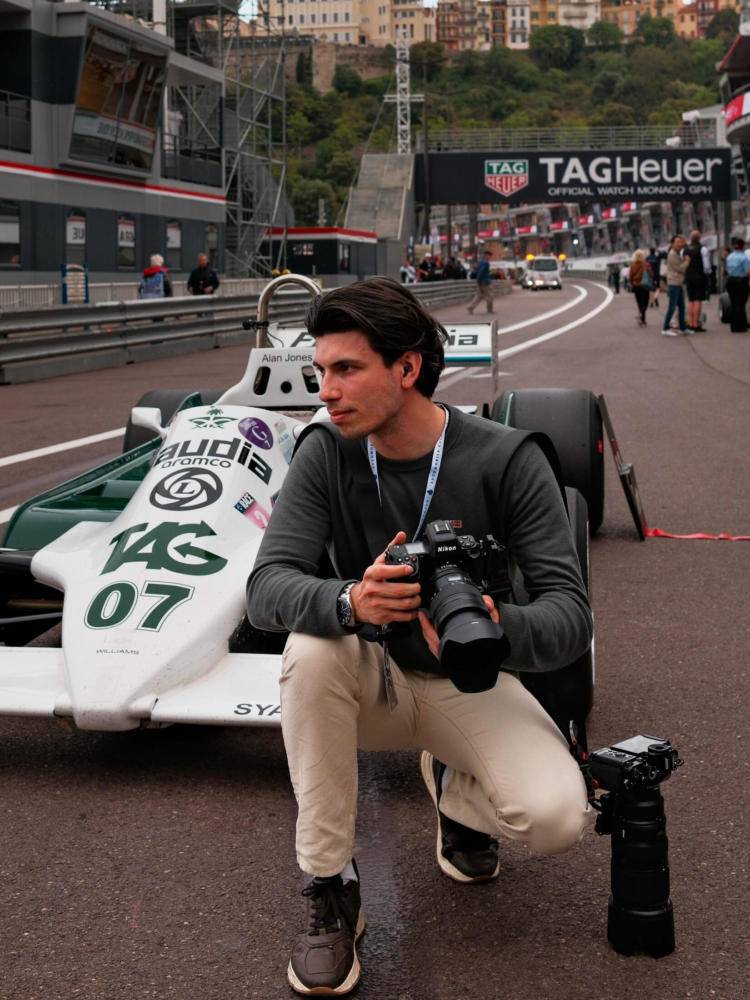
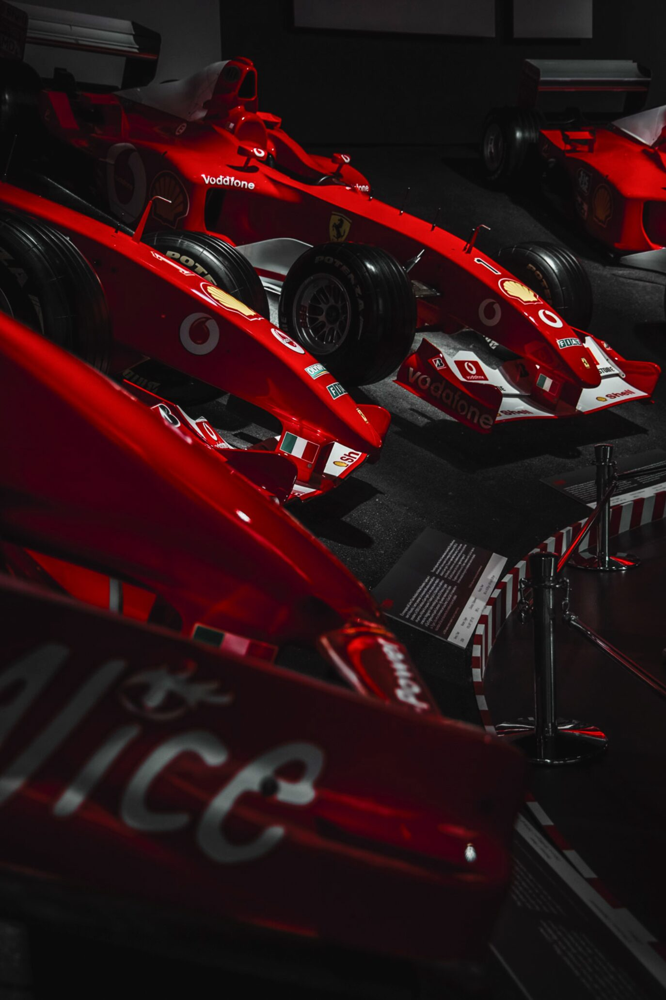

A photographer of speed, silence and heritage, drawn to the human moments that happen beyond the race.

I am Simone Slawitz, an Italian photographer with an editorial approach and a precise, restrained aesthetic inspired by the heritage of motorsport.
Motorsport is my natural habitat: my images narrate speed and silence, the human dimension and rituals beyond the track, honouring the heritage of this world.
My work has been recognised at the Bruno Boni Photography Competition (winner 2023 and Best B&W Award 2025), received an Honorable Mention at the International Photography Awards (IPA) 2026, and has been exhibited at the Cavallerizza Art Gallery in Brescia.

I have been drawn to cars since childhood. And yes, I used to colour them red.
My family has a deep connection with racing: several relatives competed or held important roles within automotive associations. My ancestor Rienzo Slawitz was a known driver in 1923: in a Fiat 501, he challenged the Milan–Rome express train and beat it to the capital by one hour.
This background is where my passion for photographing cars comes from: capturing the vibrant spirit of this world and the stories of drivers, mechanics and spectators, without whom racing would not exist.
I am drawn to moments that feel inevitable, where light, timing and composition work quietly. Three principles guide every frame.
The climax often lives in the in-between: the choreography of the pit box, hands moving with mechanical precision, a glance from the pit wall, the quiet before the noise.
Through panning and controlled motion blur, I translate speed into emotion, making time, not only the subject, part of the frame itself.
Trackside or backstage, the aim is always the same: timeless, cinematic images able to capture not only what happened, but what it felt like.
Editorial publications, institutional recognition and exhibitions: work that has found a place beyond the portfolio.
Photography by Simone Slawitz for Classic Driver's feature on the inaugural Gran Premio Storico d'Italia at Mugello — every photograph in the piece is his own.
Read the feature on Classic Driver →“(Beyond) The Race” is not only a title, it is the direction: the world around racing told with the same care — architecture, travel, people and visual culture.